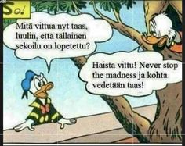
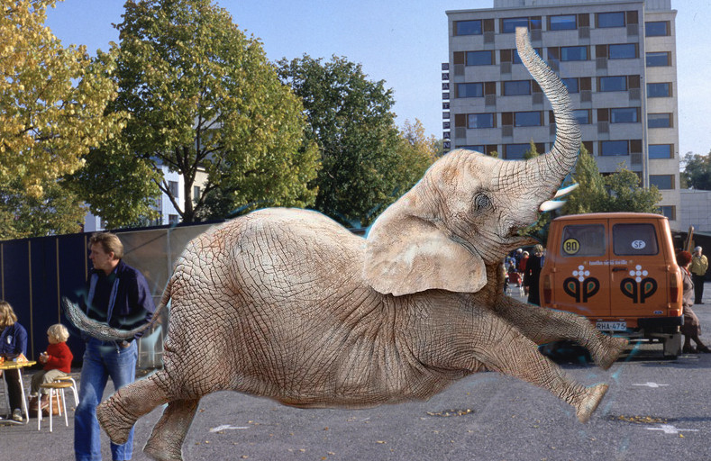

Vähän tekstiä "Mainissa"
Flexboxia käyttäen tehty. Flex-wrapilla tehdään selväksi, että sivun kokoa muuttaessa eri "itemit" asettuvat sivulle mukavammin. "Media screen ja .row flex-direction-column saa sivun koon pienentyessä vasemman puoleisen sivu columnin "katkeamaan" ja saa mainin alkamaan suoraan "siden" sisällön loputtua.
grid.css -tiedosto mistä tämän sivun css löytyy on nimeltään vähän harhaanjohtava ja sisältää myös tähän sivuun epäolennaista asiaa, kun kokeilin useita asioita samaan aikaan samalla tiedostolla.
Hyviä artisteja/yhtyeitä
- Dream Theater
- DragonForce
- Amaranthe
- Iron Maiden
- Def Leppard
Alla stats for spotifyn mukaan minun viimeisen kuukauden aikana eniten kuunnellut artistit
- Dance With the Dead
- W.A.S.P
- The Birthday Massacre
- Turmion Kätilöt
- Dream Theater
Muutama meemi:
 Neves Stop The Madness -meemi ja Norsu torilla, joka ei niinkään ole meemi mutta löytyi sopivasti koneelta valmiiksi.